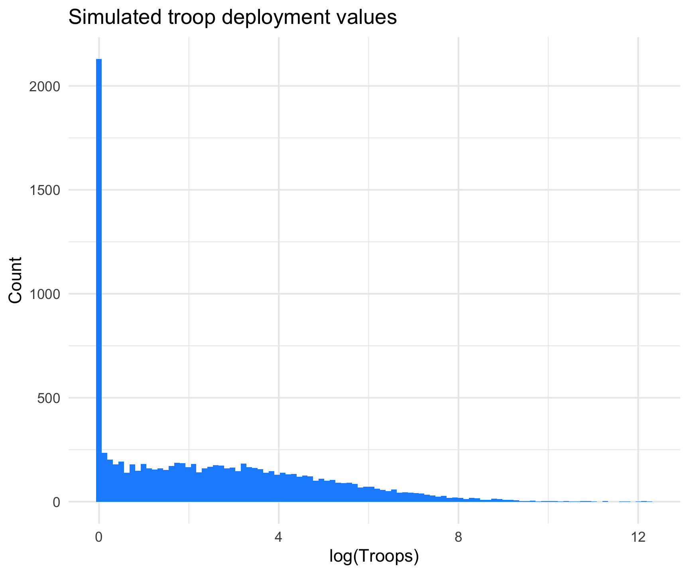

I previously wrote about a project in which I was attempting to figure out how to build a probability density function for a hurdle log-normal model. Ultimately I kind of left this topic hanging because I wasn’t really sure that the solution I had settled on was correct. The good news is, it was. The bad news is, I spent quite a bit of time trying to solve a problem that already had a solution. Still, it was probably good practice to just work through the problem on my own, even if it was somewhat moot. All that said, it’s probably also useful to run through the problem again and the answer.
To quickly rehash, we’re dealing with U.S. troop data reported on a country-year basis from 1950-2020. The data have a long right tail and are truncated at 0. There are also a lot of 0 values. The following figure shows some simulated data to give you a rough idea of what the distribution of the data look like.
# Simulation . Values reflect what we see in our data.sims <-1e4muval =2.8sdval =2.54pival =0.2simvals <-rep(NA, sims)simvals[c(1:2000)] <-rep(0, sims*0.2)simvals[c(2001:10000)] <-rlnorm(sims*0.8, meanlog = muval, sdlog = sdval)ggplot(as.data.frame(simvals), aes(x =log1p(simvals))) +geom_histogram(bins =100, fill ="dodgerblue1") +theme_minimal() +labs(x ="log(Troops)",y ="Count",title ="Simulated troop deployment values")

Ultimately I want to be able to calculate probability values for specific values of the troops variable. The {stats} package has a built-in probability density function for lognormal distributions. The trick was to produce one that would work with a hurdle lognormal distribution like the one shown above. The function I settled on is below:
This just uses the dlnorm() function to calculate probability values for cases where troops \(>0\). Note that I have it set to return the log of the probability value. This allows us to add the log of \(1-pval\), which is just one minus the hurdle probability value. This ultimately gives us the log of the probability of the chosen value, adjusting for the 0 values in the distribution. We just exponentiate that value to get the return the probability value we’re interested in. In this case that’s \(\approx\) 0.0335. This is a little different than what I did in the previous post, but gets us the same result with a little more flexibility.
So is this right?
Turns out the {brms} package already has a suite of functions that calcualte these quantities of interest. As is often the case, even though I’ve been running some hurdle lognormal models, I missed the probability density functions corresponding to these distributions. Using the simulated data we can see if that function matches the homemade one above.
prob.brms <- brms::dhurdle_lognormal(3, mu = muval, sigma = sdval, hu =0.2, log =FALSE)print(prob)## [1] 0.03346686print(prob.brms)## [1] 0.03346686
Note that the arguments in the {brms} function have different names, but otherwise things look good! The probability values are identical. As another experiment, let’s look at the probability values for various values of the troops variable that we actually observe. Deployments usually run from about 0 up through a max of about 500,000 during the Vietnam War. This is relatively brief, though. Most of the higher values cluster around 150,000-200,000 in Germany during the Cold War. The following loop just compares the home-rolled function (the black line) with the {brms} function (the red line) as a further check to make sure I didn’t screw anything up.
Looks good! Overall this was a nice learning experience, and even though I could have arrived at the same conclusion with a pre-assembled function, it felt good to dig into the process on my own since this isn’t something I’m typically thinking about.
The next step will be integrating this into some marginal structural models so we cal calculate some inverse probability of treatment weights. This is something I’ve been working on for a while now, but have stuck with basic Gaussian distributions for the treatment weighting models. Given the distribution of the data this produces some ill-fitting models, and I think this is a way to generate better weights. I haven’t come across this method in the literature. There are papers on continuous treatment models, but most examples tend to utilize normally distributed treatments. As always, if this is something anyone has come across before send me a link! I’d love to check it out.